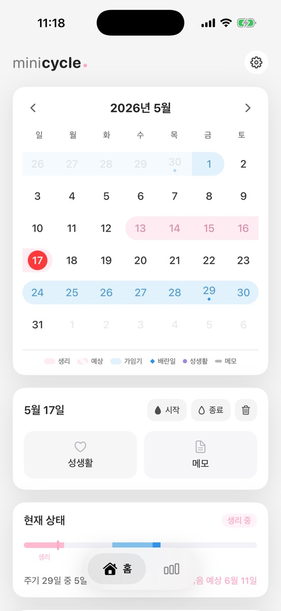
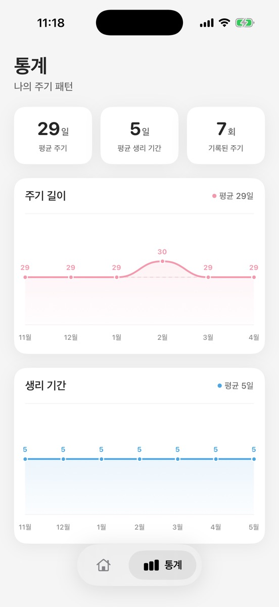

주기 예측
MiniCycle은 생리 예정일, 배란일, 가임기를 어떻게 예측하나요
MiniCycle이 최근 생리 기록, 중앙값 기반 계산, 공개 월경 주기 연구를 바탕으로 생리 예정일과 배란일, 가임기를 표시하는 방식을 설명합니다.
MiniCycle
생리 날짜를 기록하고, 배란일과 가임기 추정을 확인하고, 깔끔한 홈 화면 위젯으로 현재 주기 상태를 빠르게 봅니다.

MiniCycle은 월간 캘린더, 일별 기록, 예측, 위젯을 중심에 두고 불필요한 기능을 줄였습니다.

주기 예측
MiniCycle이 최근 생리 기록, 중앙값 기반 계산, 공개 월경 주기 연구를 바탕으로 생리 예정일과 배란일, 가임기를 표시하는 방식을 설명합니다.
위젯
생리 캘린더 위젯이 현재 주기 상태, 예정일, 가임기 정보를 어떻게 빠르게 보여줘야 하는지와 MiniCycle 위젯 설계 이유를 설명합니다.
개인정보
MiniCycle은 계정 기반 동기화 없이 기기 안에 생리 기록을 저장합니다. 간단한 생리 캘린더에서 로컬 저장이 왜 중요한지 설명합니다.
지원, 버그 제보, 개인정보 문의는 chwookqwe@gmail.com으로 보내주세요.